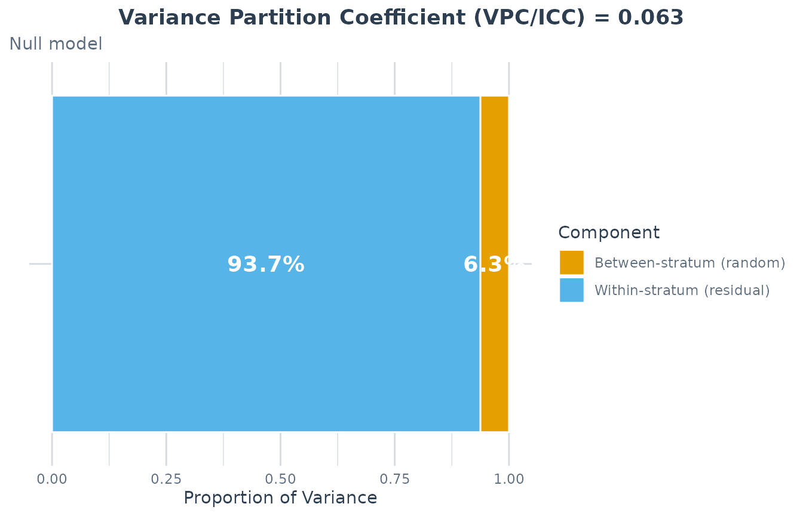
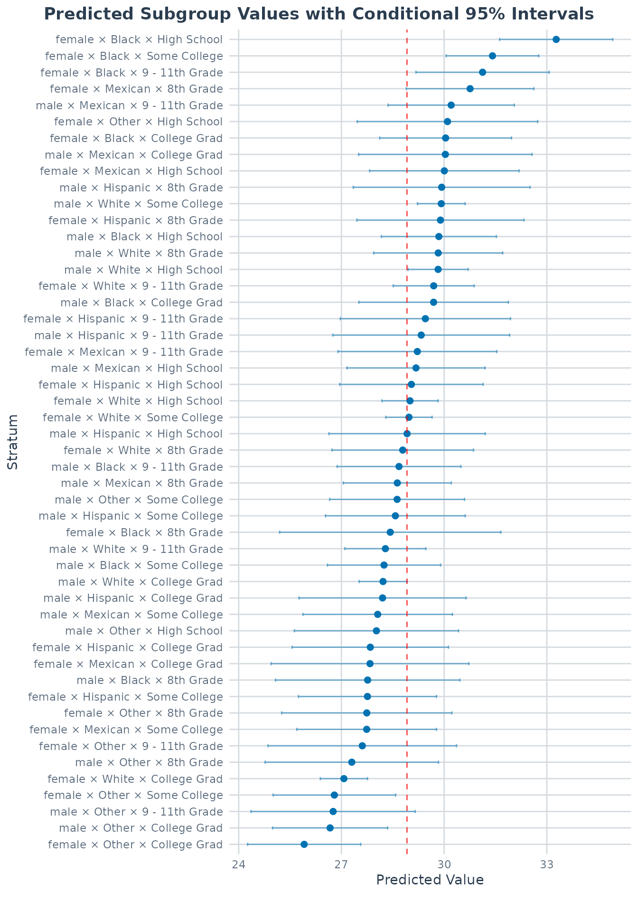
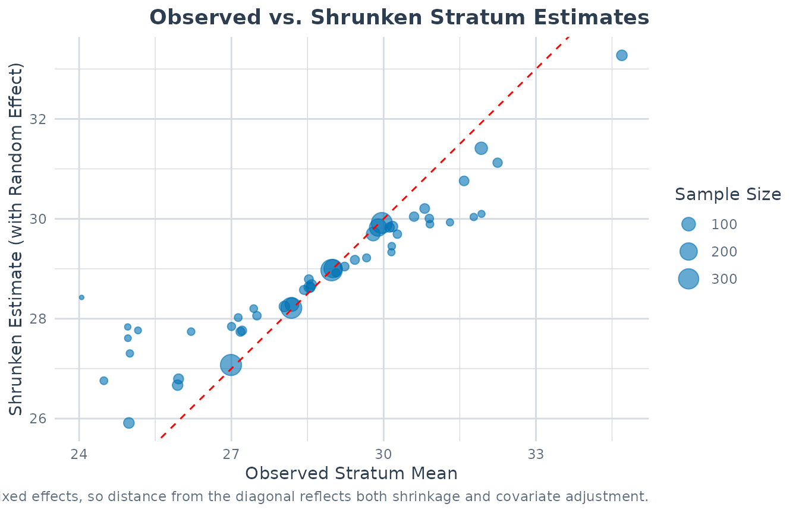
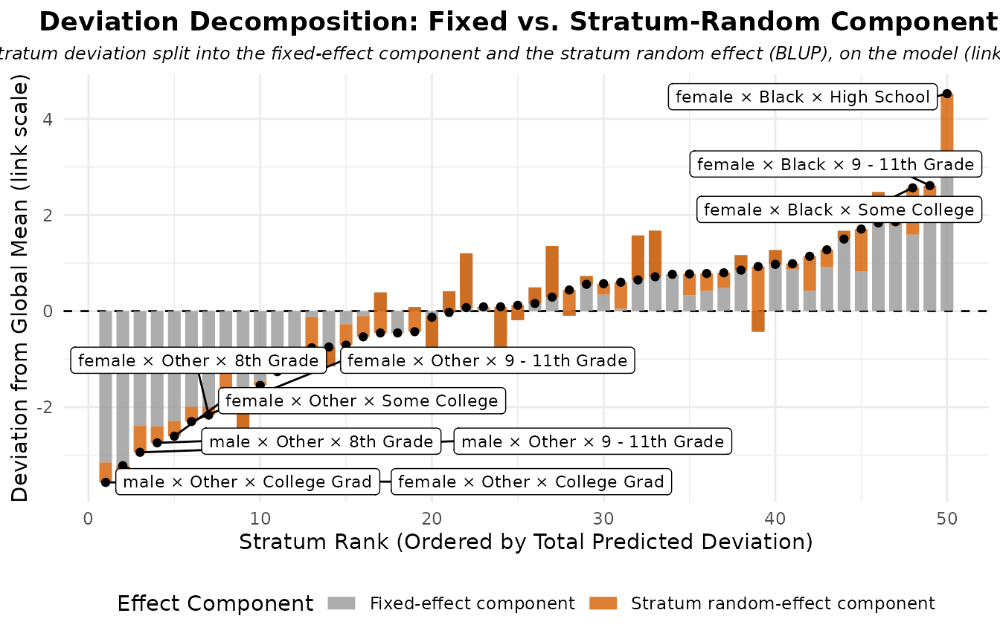
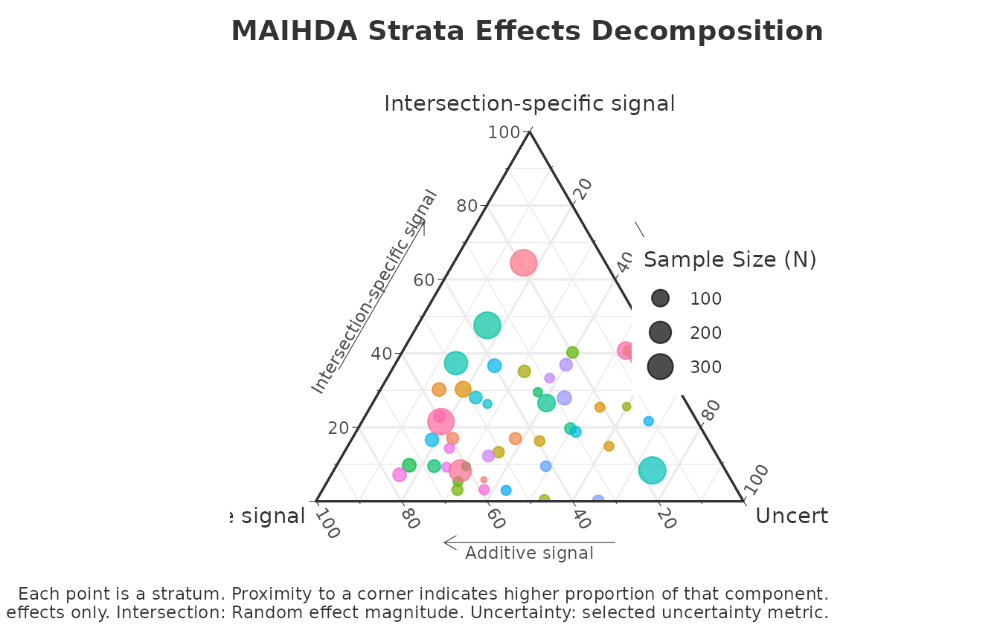
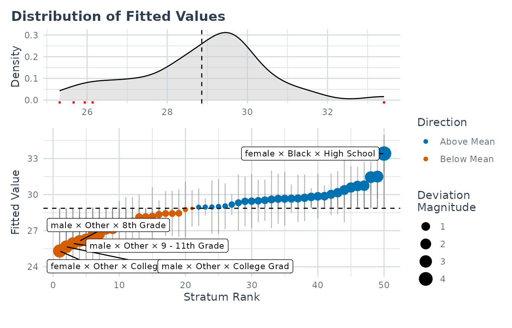
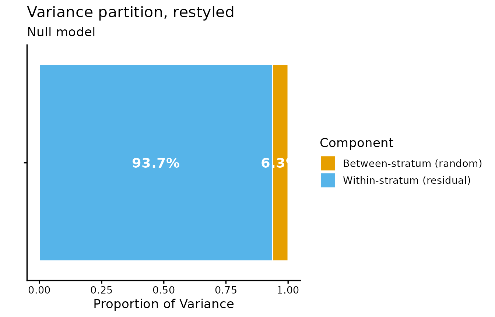
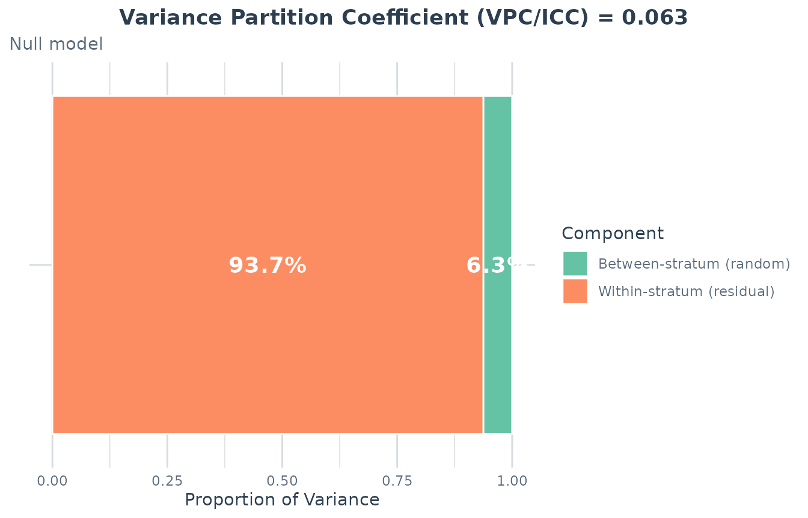
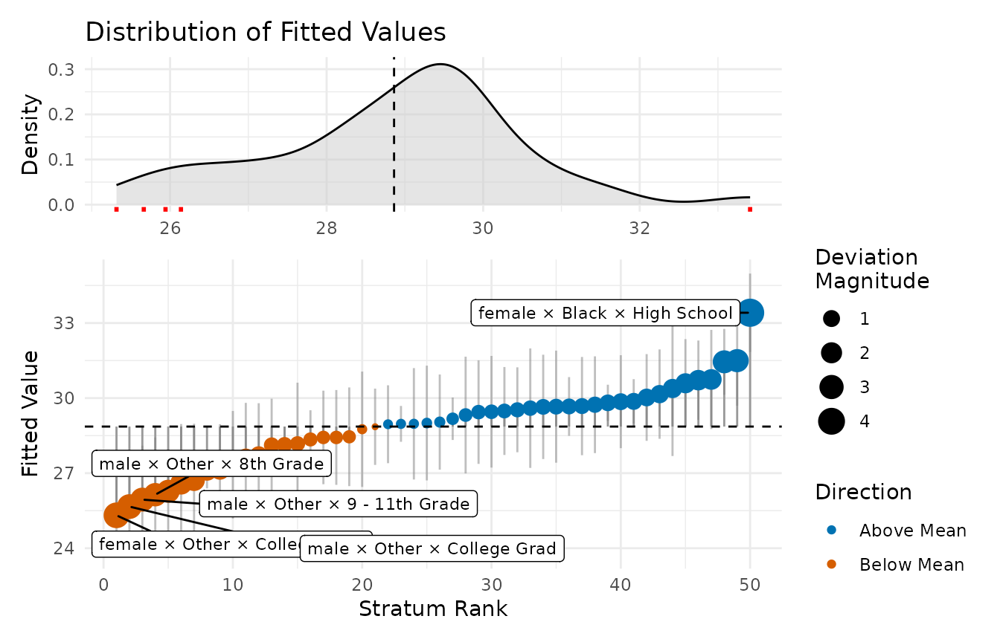

Interpreting MAIHDA Plots and Diagnostics
Hamid Bulut
2026-06-17
Source:vignettes/interpreting_plots.Rmd
interpreting_plots.RmdOverview
plot() on a fitted MAIHDA model gives you several views
of the same model, each answering a different question. This vignette
explains, for every plot type, what it shows, how to read it, and what
not to conclude from it. Calling plot() with no specified
type draws them all.
Lets start with fitting the model.
library(MAIHDA)
data("maihda_health_data")
health_complete <- maihda_health_data[complete.cases(
maihda_health_data[, c("BMI", "Age", "Gender", "Race", "Education")]
), ]
model <- fit_maihda(
BMI ~ Age + Gender + Race + Education + (1 | Gender:Race:Education),
data = health_complete
)
vpc – variance partition
The VPC plot shows how the total unexplained variance splits into a between-stratum component (the numerator of the VPC/ICC), any other random-effect components, and the within-stratum residual.
plot(model, type = "vpc")
How to read it. The between-stratum slice is the share of unexplained variation that lies between intersectional groups. For non-Gaussian models this split is on the latent scale.
predicted – stratum predictions with intervals
plot(model, type = "predicted")
How to read it. Each point is a stratum’s model-based prediction with a 95% interval, ordered so you can see which intersections sit above or below the average. The estimates are shrunken toward the overall mean. For a binomial model the axis is the predicted probability instead of the outcome mean.
obs_vs_shrunken – shrinkage made visible
plot(model, type = "obs_vs_shrunken")
How to read it. This contrasts the raw observed stratum means with the model’s shrunken estimates. Points far from the diagonal are strata whose raw mean was pulled substantially toward the centre, typically the smallest, noisiest cells. It is a sanity check on how much the multilevel model is regularising.
effect_decomp – additive vs. intersection-specific
plot(model, type = "effect_decomp")
How to read it. This separates, for each stratum, the part of its deviation from the grand mean that is explained by the additive main effects from the intersection-specific part (the stratum random effect, what is left over after the additive effects). Large intersection-specific bars are the candidate “more/less than the sum of the parts” intersections, but treat them as hypotheses to probe, not as confirmed interactions, since they also absorb sample composition and estimation noise.
ternary – relative signal diagnostic
The ternary plot needs the optional ggtern package, so
it is only drawn here when that package is installed.
plot(model, type = "ternary")
How to read it. For each stratum the plot normalises three magnitudes to sum to 1: the additive signal (how far the fixed-effect-only prediction sits from the grand mean), the intersection-specific signal (the size of the stratum random effect), and the uncertainty in that estimate. A stratum near the “uncertainty” corner is dominated by noise; one near the “intersection” corner carries signal beyond the additive main effects.
prediction_deviation – the deviation dashboard
plot(model, type = "prediction_deviation")
How to read it. This two-panel dashboard highlights the most notable cases or strata. What counts as “notable” depends on the model: the largest deviation from the mean prediction (Gaussian/Poisson), the largest absolute deviance residual (binomial), or the most surprising observation (ordinal).
Group-comparison plots
When you fit across a higher-level grouping variable with
compare_maihda_groups() (or
maihda(group = ...)), extra plot types become available –
group_vpc, group_components,
group_between_variance, and group_pcv (also
reachable as type = "vpc", "components",
"between_variance", and "pcv" on the
comparison object). Those are covered in the group comparison vignette.
Customizing the appearance
Every plot() call with a single type
returns a plain ggplot object, so you are never locked
into the package’s styling – restyle it with the usual ggplot2 grammar
by adding a theme, overriding the labels, or dropping in another layer.
Themes, labs(), and added layers compose cleanly:
library(ggplot2)
#>
#> Attaching package: 'ggplot2'
#> The following objects are masked from 'package:ggtern':
#>
#> aes, annotate, ggplot, ggplot_build, ggplot_gtable, ggplotGrob,
#> ggsave, layer_data, theme_bw, theme_classic, theme_dark,
#> theme_gray, theme_light, theme_linedraw, theme_minimal, theme_void
plot(model, type = "vpc") +
theme_classic(base_size = 13) +
labs(title = "Variance partition, restyled")
The views that map a fill or colour (vpc,
context_vpc, effect_decomp) also accept a
replacement palette. ggplot2 prints a harmless “Scale for fill is
already present … which will replace the existing scale” message as it
swaps the built-in palette out (suppressed here):
plot(model, type = "vpc") +
scale_fill_brewer(palette = "Set2")
A few plot types return something other than a single ggplot, so they restyle slightly differently:
-
prediction_deviationis a two-panel patchwork.+ theme_*()styles only the active panel; use&to apply a theme to both panels at once:plot(model, type = "prediction_deviation") & theme_minimal()
-
type = "all"returns a named list of ggplot objects (it prints them as a side effect), so pick one out to restyle it: ternaryis aggternobject with its own coordinate system – reach for theggtern::theme_*()family rather than the standard ggplot2 themes.
See also
- Introduction to MAIHDA – the end-to-end workflow.
- MAIHDA for binary outcomes – how these plots adapt to logistic models.